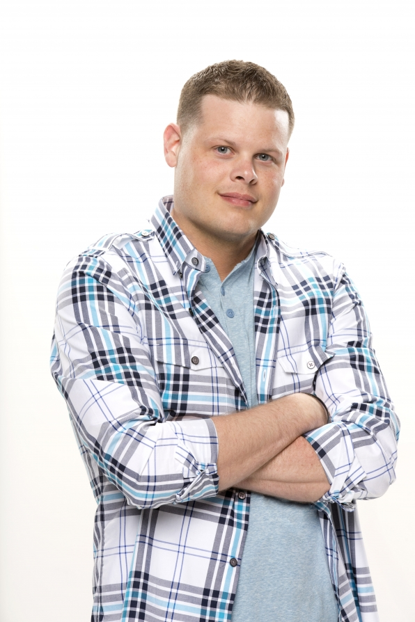

Winners
Eddie McGee

Name: Eddie McGee
Season Winner: 1
Season(s) Participated: 1
Age: 42
Born: February 24th, 1979
Hometown: Commack, New York
Occupation: Student
Eddie McGee one the first season of big brother with 59% of America's vote. He was 21 and held the record of the youngest winner for 14 seasons of big brother. He is the first and only winner to be handicapped. Eddie has never come back for another season.
Dr. Will Kirby

Name: Will Kirby
Season Winner: 2
Season(s) Participated: 2, 7
Age: 48
Born: January 2nd, 1973
Hometown: Maimi, Florida
Occupation: Physician
Dr. Will won season 2 of big brother and placed 4th on season 7. He won season 2 with a vote of 5 to 2. He was 28 when he won season 2 and 34 when he participated in season 7. Dr. Will now has 2 children and lives in Miami, Florida. He owns a company called LaserAway that specializes in tatoo removal. Dr. Will is the greatest player to ever play big brother.
Lisa Donahue

Name: Lisa Donahue
Season Winner: 3
Season(s) Participated: 3
Age: 45
Born: February 4th, 1976
Hometown: Los Angeles, California
Occupation: Bartender
Lisa Donahue won big brother season 3 by a vote of 9 to 1 against runner up Daniele Reyes. Lisa was the first female to win the show and was also the first person to with the show who also won the first HOH. Lisa attempted to get back on season 7 but was denied because she did not have enough of America's votes.
Jun Song

Name: Jun Song
Season Winner: 4
Season(s) Participated: 4
Age: 45
Born: July 19th, 1975
Hometown: New York, New York
Occupation: Investment Manager
Jun Song won season 4 of big brother by a vote of 6 to 1 against runner up Allison Irwin. Jun was the first and only Asian-American to win a big brother season. She was 28 when she won big brother and appeared on season 7 and season 10 as a cameo.
Drew Daniel

Name: Andrew Daniel
Season Winner: 5
Season(s) Participated: 5
Age: 39
Born: April 28th, 1982
Hometown: Urbana, Ohio
Occupation: College Graduate
Drew Daniel won season 5 of big brother by a vote of 4 to 3 against runner up, Micheal "Cowboy" Ellis. He had a showmance on the show with Diane Henry, but sadly after a year of being together, they split. Drew has not apeared on another season.
Maggie Ausburn

Name: Maggie Ausburn
Season Winner: 6
Season(s) Participated: 6
Age: 42
Born: August 14th, 1978
Hometown: Las Vegas, Nevada
Occupation: ER Nurse
Maggie Ausburn won big brother 6 by a vote of 4 to 3 against runner up Ivette Corredero. Maggie was 27 when she won season 6 and played one of the best games in the older seasons. Maggie has not made an appearence on any other season.
Mike "Boogie" Malin

Name: Mike Malin
Season Winner: 7
Season(s) Participated: 2, 7, 14
Age: 50
Born: July 16th, 1970
Hometown: Los Angeles, California
Occupation: Bar Owner
Mike "Boogie" Malin won season 7 by a vote of 6 to 1 against runner up, Erika Landin. Mike was 36 when he won big brother 7 and also played in seasons 2 and 14. He made appearances on seasons 2, 7, 10, 11, 14, and 18. Mike was the first returning player to win a season.
"Evel" Dick Donato

Name: Dick Donato
Season Winner: 8
Season(s) Participated: 8, 13
Age: 57
Born: June 24th, 1963
Hometown: Los Angeles, California
Occupation: Bar Owner
Dick Donato, also known as "Evel Dick" won big brother 8 by a vote of 5 to 2 against the runner up and Dick's daughter, Danielle Donato. Dick and Danielle made were the first duo team to make it to the final two. Dick was 44 whenhe won season 8 and holds the record as the oldest player to win a season.
Adam Jasinski

Name: Adam Jasinski
Season Winner: 9
Season(s) Participated: 9
Age: 43
Born: April 30th, 1978
Hometown: Delray Beach, Florida
Occupation: Public Relations Manager
Adam Jasinski won season 9 by a vote of 6 to 1 against runner up Ryan Quicksall. Adam was 29 when he won season 9. Adams partner was Sheila Kennedy who placed 3rd in the season. After season 9 Adam was arrested for drug chrages.
Dan Gheesling

Name: Dan Gheesling
Season Winner: 10
Season(s) Participated: 10, 14
Age: 37
Born: September 1st, 1983
Hometown: Dearborn, Michigan
Occupation: Teacher
Dan Gheesling won big brother 10 by a vote of 7 to 0 against runner up, Memphis Garret. Dan holds the record for the first houseguest to win by a unanimous vote. Dan was the only player to win unanimously for over a decade. Dan also played on season 14 but made appearences on season 11, 16 and 20. Dan is the second best player to play Big brother.
Jordan Lloyd

Name: Jordan Lloyd
Season Winner: 11
Season(s) Participated: 11, 13
Age: 34
Born: November 21st, 1986
Hometown: Charlotte, North Carolina
Occupation: Waitress
Jordan Lloyd won season 11 by a vote of 5 to 2 against runner up, Natalie Martinez. Jordan was in a showmance with another player, Jeff Shroeder who placed 5th in the same season. They both went on to make an appearence in season 12, played again in season 13 with Jordan placing 4th, and Jeff proposed to Jordan on an episode of season 16.
Hayden Moss

Name: Hayden Moss
Season Winner: 12
Season(s) Participated: 12
Age: 34
Born: May 27th, 1986
Hometown: Temple, Arizona
Occupation: College Student
Hayden Moss won season 12 by a vote of 4 to 3 against runner up, Lane Elenburg. Hayden has made an appearence on season 14. Hayden was 23 when he won season 12 and went on to paticipate in another CBS show Survivor.
Rachel Reilly

Name: Rachel Reilly
Season Winner: 13
Season(s) Participated: 12, 13
Age: 37
Born: October 16th, 1983
Hometown: Las Vegas, Nevada
Occupation: Cocktail Waitress
Rachel Reilly won season 13 by a vote of 4 to 3 against runner up, Porche Briggs. Rachel also played in season 12 and placed 9th. She has since made appearences on season 16, season 20, and celebrity big brother season 1. Rachel has three children and is married to Brendon Villegas who also played in season 12 and 13.
Ian Terry

Name: Ian Terry
Season Winner: 14
Season(s) Participated: 14, 22
Age: 30
Born: March 19, 1991
Hometown: Pittsburgh, Pennsylvania
Occupation: Managment Consultant
Ian Terry won season 14 by a vote of 6 to 1 against runner up, Dan Gheesling. Ian went on to also play in season 22 placing 11th. Ian is the first player to win against a returner in the final two. Ian is also the youngest houseguest to win a season beating out Eddie McGee by only a few months.
Andy Herren

Name: Andy Herren
Season Winner: 15
Season(s) Participated: 15
Age: 34
Born: November 14th, 1986
Hometown: Chicago, Illinois
Occupation: College Profesor
Andy Herren won season 15 by a vote of 5 to 2 against runner up, GinaMarie Zimmerman. Andy is the first and only LGBTQ member to win a big brother season. Andy played both sides of the house beautifully leading him tothe 500,000 dollars. Andy's game is overlooked because of all of the racist comments other houseguests made on the season.
Derrick Levasseur
Name: Derreck Levasseur
Season Winner: 16
Season(s) Participated: 16
Age: 37
Born: February 3rd, 1984
Hometown: Providence, Rhode Island
Occupation: Cop, TV Personality, & Writer
Derrick Levasseur won season 16 by a vote of 7 to 2 against runner up and future winner of season 22, Cody Calafiore. Derrick out whitted everyone to get to the end. Derrick has a child and has made appearinces on other television shows. Derrick also wrote a book called "The Undercover Edge".
Steve Moses
Name: Steve Moses
Season Winner: 17
Season(s) Participated: 17
Age: 28
Born: December 10th, 1992
Hometown: Gouverneur, New York
Occupation: College Student
Steve Moses won season 17 of big brother by a vote of 6 to 3 against runner up, Liz Nolan. Steve was 24 when he won big brother and has made no future appierences. Steve evicted big brother great, Vanessa Russo, in the final 3 of season 17 which gave him the win as he made such a big move.
Nicole Franzel
Name: Nicole Franzel
Season Winner: 18
Season(s) Participated: 16, 18, 22
Age: 28
Born: June 30th, 1992
Hometown: Ubly, Michigan
Occupation: Social Media Influencer
Nicole Franzel won big brother 18 by a vote of 5 to 4 agaisnt runner up Paul Abrahamian. Nicole played in big brother 16, 18 and 22, placing in 7th, 1st, and 3rd respectivly. Nicole holds the record for most days spent in the house with a number of 255 days closly beating the secong place contender Janelle Pierzina who has spent 200 days in the big brother house. Nicole met he husband Victor Arroyo on big brother 18 but did npt start dating on the show but instead a year later.
Morgan Willett

Name: Morgan Willett
Season Winner: Over The Top
Season(s) Participated: Over The Top
Age: 26
Born: May 13th, 1994
Hometown: Granbury, Texas
Occupation: Publicist
Morgan Willett won big brother over the top agaisnt Jason and Krissie by America's vote. Morgan has a little sister named Alex Willett who placed 8th on the same season.
Josh Martinez
Name: Josh Martinez
Season Winner: 19
Season(s) Participated: 19
Age: 27
Born: January 4th, 1994
Hometown: Maimi Florida
Occupation: Hair Care Sales
Josh Martinez won big brother 19 by a vote of 5 to 4 agaisnt runner up Paul Abrahamian. Josh is the first and only Latino-American to win a big brother season. Josh was supposed to play in big brother season 22 but he tested positive for covid during casting time and thus could not return.
Marissa Jaret Winokur
Name: Marissa Jaret Winokur
Season Winner: Celebrity 1
Season(s) Participated: Celebrity 1
Age: 48
Born: February 2nd, 1973
Hometown: Toluca Lake, California
Occupation: Actress, Director
Marissa Jaret Winokur won Celebrity Big brother 1 by a vote of 6 to 3 against runner up, Ross Matthews. Marissa has perticipated in many other broadway plays and has also directed a bunch as well.
Kaycee Clark

Name: Kaycee Clark
Season Winner: 20
Season(s) Participated: 20
Age: 33
Born: December 26, 1987
Hometown: San Diego, California
Occupation: Pro-Football Player
Kaycee Clark won Big brother season 20 by a vote of 5 to 4 against runner up, Tyler Crispen. Kaycee is a proffesional football player playing for the San Diego Surge. Kaycee has appeared in other television shows such as MTV's "The Challenge". Like Josh Martinez, Kaycee was supposed to play in big brother season 22 but she tested positive for covid during casting time and thus could not return.
Tamar Braxton
Name: Tamar Braxton
Season Winner: Celebrity 2
Season(s) Participated: Celebrity 2
Age: 44
Born: March 17th, 1977
Hometown: Washington, D.C.
Occupation: Singer & TV Personality
Tamar Braxton won Celebrity Big Brother season 2 by a vote of 9 to 0 against runner up, Ricky Williams.
Jackson Michie

Name: Jackson Michie
Season Winner: 21
Season(s) Participated: 21
Age: 25
Born: June 13th, 1995
Hometown: Los Angeles, California
Occupation: Server
Jackson Michie won season 21 by a vote of 6 to 3 against runner up, Holly Allen. Jackson was in a showmance with holly however shortly after the show they split due to complications.
Cody Calafiore
Name: Cody Calafiore
Season Winner: 22
Season(s) Participated: 16, 22
Age: 30
Born: December 13th, 1990
Hometown: Hackensack, New Jersey
Occupation: Soccer Coach
Cody Calafiore won big brother 22 by a vote of 9 to 0 against runner up, Enzo Palumbo. Cody also placed second in big brother 16 giving him the placement record a long with Dan Gheesling. Dan and Cody are also the only two players to win by a unanimous vote.